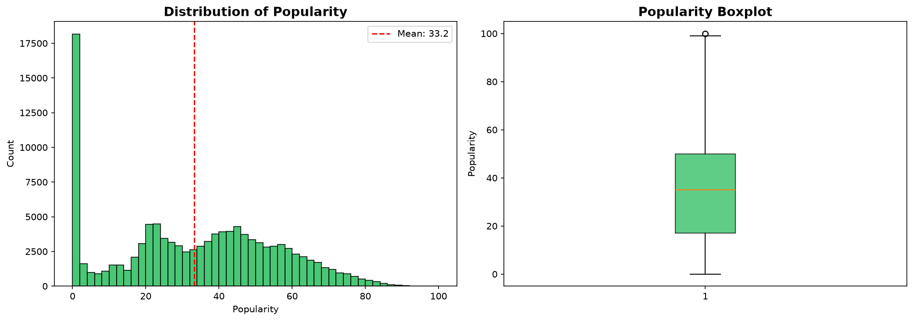
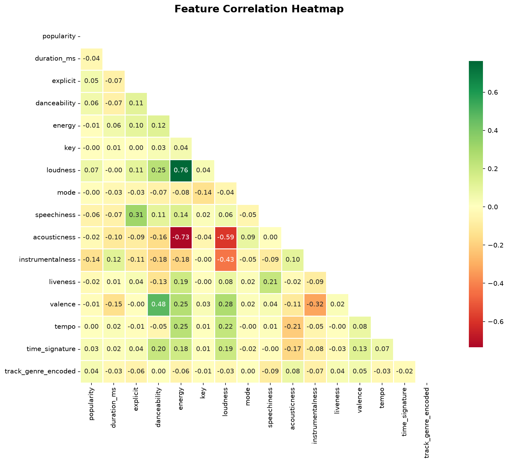
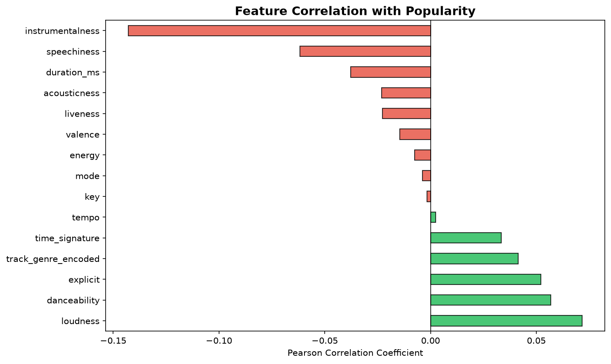
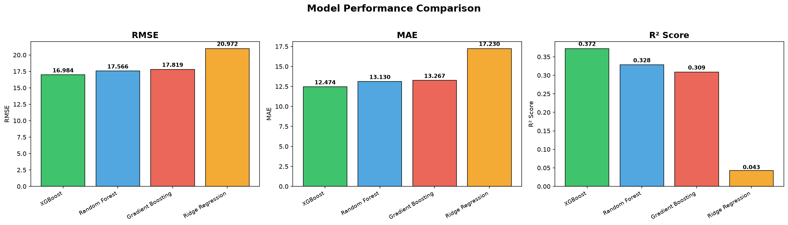
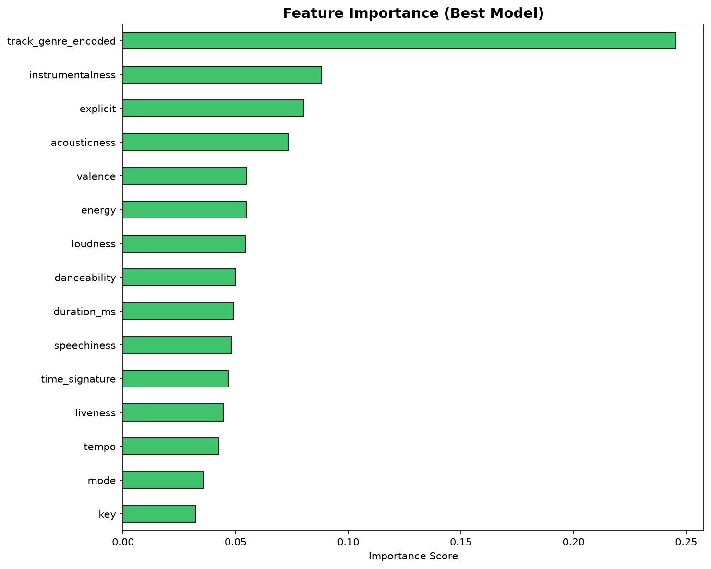
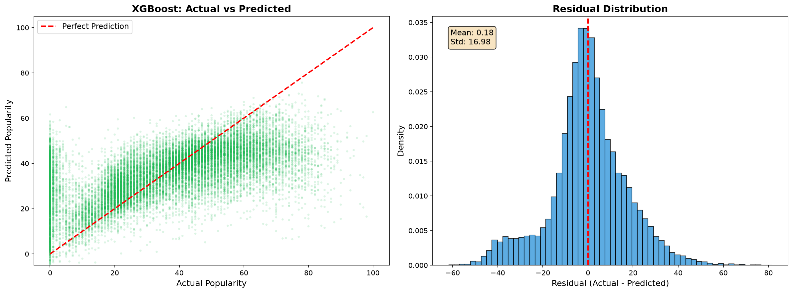
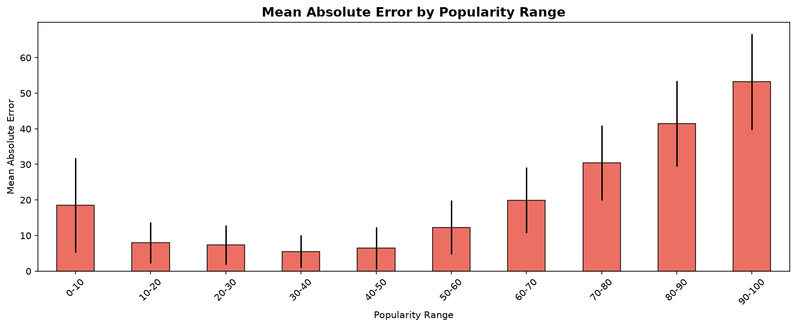
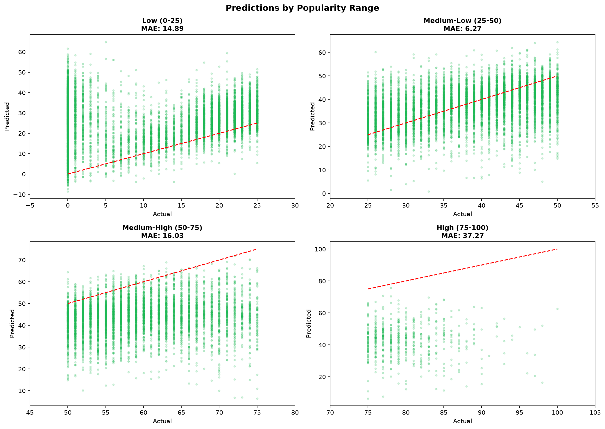

So the task was to predict how popular a Spotify song is going to be, using its audio features. Popularity on Spotify goes from 0 to 100 and its calculated by their algorithm based on how many plays a track gets and how recent those plays are.
I used the Spotify Tracks Dataset from Kaggle which has around 114k songs across 114 different genres. Each track comes with a bunch of audio features like how danceable it is, energy level, tempo, loudness etc. The idea was straightforward — can we figure out if a song will be popular just from these numbers?
Honestly I went into this thinking it would be simple — throw some data at a model and it predicts popularity. Turned out to be a lot more nuanced than that. Popularity depends on so many external things (marketing, artist fame, timing of release) that audio features alone can only tell you part of the story. The mean popularity was around 33.24 with a std of 22.31, so there's a huge spread.

The dataset had 114,000 rows and 21 columns. Here's what I did during preprocessing:
dropna() to clean things up. Ended up with 113,999 rows.track_id, artists, album_name, track_name, and Unnamed: 0. These are text identifiers and don't make sense as numeric inputs for regression.track_genre with 114 unique genres. I used sklearn's LabelEncoder to convert it to numeric. I considered one-hot encoding but with 114 genres that would blow up the feature space — and tree-based models handle label encoding just fine. The explicit column was boolean so I cast it to 0/1.StandardScaler for Ridge regression. Tree-based models don't need scaling.

I trained 4 different models to compare approaches:
Linear regression with L2 regularization (alpha=1.0). Used as a sanity check — if a linear model does well, maybe the relationship is simple.
Ensemble of 200 decision trees. Parameters: max_depth=15, min_samples_split=5, min_samples_leaf=2. Each tree sees a random subset of features and data.
Sequential ensemble (n_estimators=200, max_depth=5, learning_rate=0.1). Each new tree tries to fix the errors of previous ones.
Optimized gradient boosting with built-in regularization. Parameters: n_estimators=300, max_depth=6, learning_rate=0.1, subsample=0.8, colsample_bytree=0.8.
random_state=42 for reproducibility. Parameters chosen through common defaults + manual tweaking.
| Model | MSE | RMSE | MAE | R² Score |
|---|---|---|---|---|
| Ridge Regression | 439.82 | 20.97 | 17.23 | 0.0426 |
| Random Forest | 308.56 | 17.57 | 13.13 | 0.3283 |
| Gradient Boosting | 317.51 | 17.82 | 13.27 | 0.3089 |
| 🏆 XGBoost | 288.47 | 16.98 | 12.47 | 0.3721 |
XGBoost performed best across all metrics. R² of 0.37 means the model explains about 37% of the variance in popularity — reasonable for this problem since popularity heavily depends on non-audio factors. Ridge regression basically failed (R² = 0.04), confirming the relationship is highly non-linear.
5-Fold Cross Validation (XGBoost): Mean R² = 0.3676 ± 0.0085 — results are stable and consistent.

The feature importance from XGBoost showed:
Features like key, mode, and time_signature were basically useless — whether a song is in C major vs D minor doesn't influence clicks.

| Threshold | % of Predictions Within Range |
|---|---|
| Within ±5 points | 32.0% |
| Within ±10 points | 54.9% |
| Within ±15 points | 69.4% |
| Within ±20 points | 78.8% |
| Within ±25 points | 85.0% |

| Popularity Range | Mean Abs. Error | Count |
|---|---|---|
| 0-10 | 18.53 | 1,333 |
| 10-20 | 7.97 | 2,132 |
| 20-30 | 7.38 | 3,486 |
| 30-40 | 5.53 | 3,058 |
| 40-50 | 6.44 | 3,784 |
| 50-60 | 12.31 | 2,857 |
| 60-70 | 19.95 | 1,777 |
| 70-80 | 30.45 | 794 |
| 80-90 | 41.48 | 195 |
| 90-100 | 53.20 | 20 |
Songs with popularity 0-10 have high error because many have popularity = 0 — the model can't distinguish "bad song" from "good song nobody has heard yet." Songs above 80 are outliers driven by viral/external factors the model can't see.


This project was a solid exercise in the full ML workflow. The main takeaway was that predicting popularity from audio features alone has a hard ceiling because popularity is influenced by so many non-audio factors. That said, XGBoost with R² of 0.37 does a reasonable job and the feature analysis gave interesting insights — genre dominates everything, instrumentalness matters more than you'd think, and individual audio features play a secondary but measurable role.
I think the most interesting part was the error analysis — figuring out WHY certain songs are hard to predict was more insightful than just chasing a higher R² score. The model is decent at predicting "normal" songs in the 20-50 range but struggles with outliers on both ends, which is kind of expected.